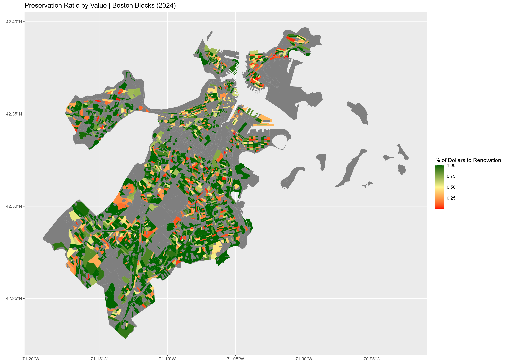

When money flows into Boston neighborhoods, does it strengthen homes people already rely on — or replace them? Community partners at the Dudley Street Neighborhood Initiative raised this question directly during workshops.
Methods
Constructed a custom Preservation Ratio (renovation $ ÷ total investment $) from 691,985 building permits across 2,146 census blocks. Applied hierarchical permit classification, corporate ownership detection, and multivariate regression with an interaction term to test the Blue Hill Avenue corridor specifically.
Key Finding
Demographics (race, income, location) do not predict preservation. Corporate ownership does — but with a striking reversal on Blue Hill Ave: where corporate owners drive redevelopment citywide (β = −0.329, p < 0.001), the same ownership correlates with higher preservation on Blue Hill (interaction β = +0.926, p < 0.05).
Policy Implication
High preservation ratios don't guarantee stability — renovations can displace through rent increases just as effectively as demolition. Policy must address both pathways: pairing renovation with rent stabilization and affordability covenants.
Visualizations
Preservation Ratio by Value · Boston Blocks 2024

The Project-Dollar Gap · 2024 Boston
By Projects92% renovations
By Dollars49% to reno.
92% of projects are renovations — but only 49% of dollars flow to them. Large redevelopments dominate the money.
Headline Findings
76.7%
Mean Preservation Ratio across 2,146 Boston census blocks — but the median is 1.0, revealing strong right-skew. Renovation dominates in count; redevelopment dominates in dollars.
β = −0.329
Corporate ownership citywide predicts lower preservation (p < 0.001). A 10pp rise in corporate-owned parcels predicts a ~3.3pp drop in preservation ratio.
β = +0.926
On Blue Hill Avenue, the same corporate ownership rise predicts a +5.9pp increase in preservation — a statistically significant reversal of the citywide pattern (p < 0.05).
Policy Takeaway
Preventing displacement requires more than stopping demolition — renovations need rent stabilization protections too.
Community brief produced collaboratively with Anghela Tamayo, Keegan Veazey & Lillian Zhu as part of the Big Data for Cities course at Northeastern University.